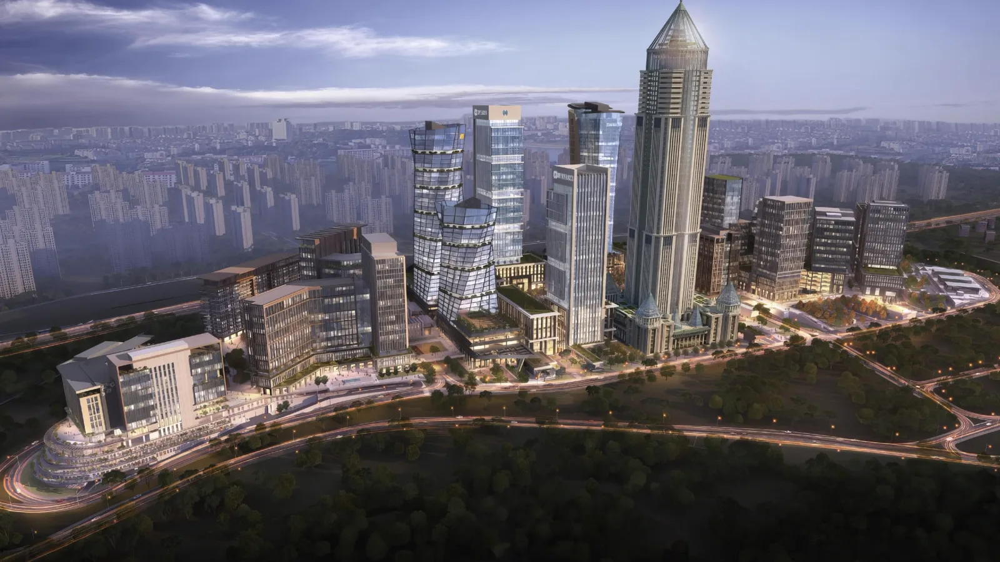
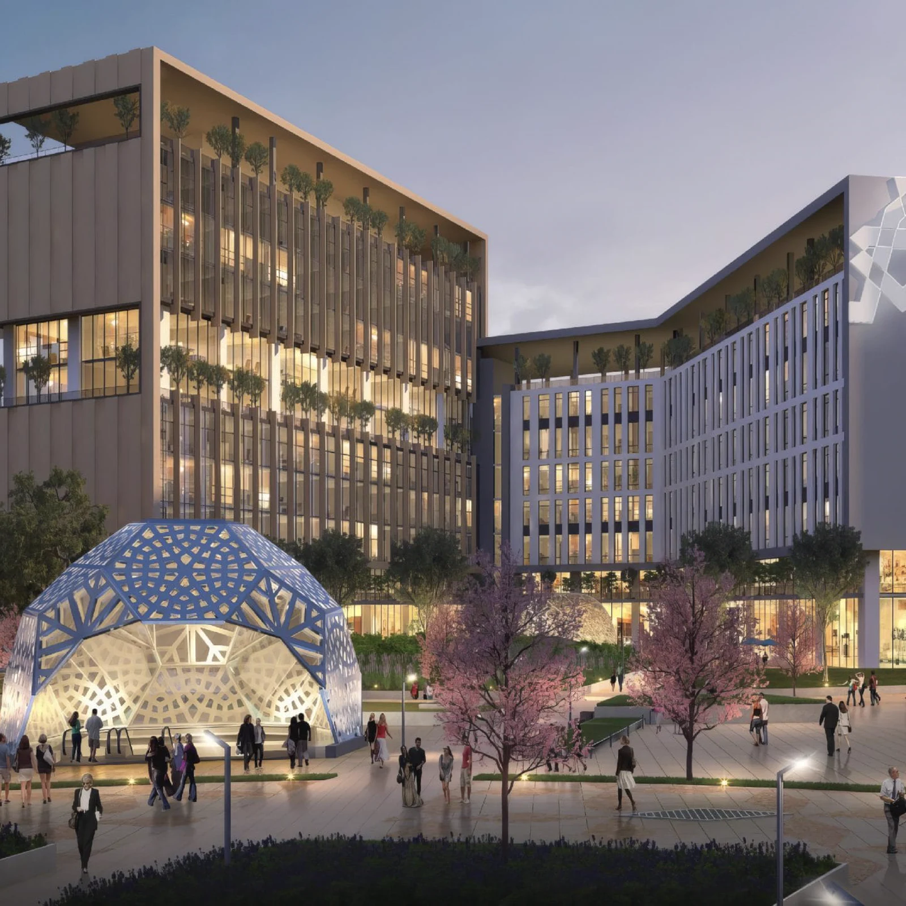

Fintech Zone Webinar Serisi.
Her ay düzenli olarak devam edecek olan Fintech Zone Webinar Serisi'nin yeni etkinliklerini ve güncel duyurularını www.fintech.zone/webinar adresinden takip edebilirsiniz.

“Finansal Teknolojilerin Geleceği”
Her ay düzenli olarak.
Fintech Zone Webinar Serisi her ay düzenli olarak devam edecek. Yeni etkinlikler ve güncel duyurular fintech.zone/webinar adresinden takip edilebilir.
Sayın Bayram Tuzcu.
İlk webinarımızda Ziraat Teknoloji A.Ş. Genel Müdürü Sayın Bayram Tuzcu ile finansal teknolojilerdeki güncel gelişmeleri ele aldık.
Finansal teknolojilerin geleceği.
Finansal teknolojilerde güncel gelişmeler, sektörel yenilikler ve geleceğin teknoloji trendleri.




Gerçekleşen ve sıradaki bölüm
Fintech Zone Webinar Serisi kapsamında gerçekleştirdiğimiz ilk webinarımızda, Ziraat Teknoloji A.Ş. Genel Müdürü Sayın Bayram Tuzcu ile finansal teknolojilerdeki güncel gelişmeleri, sektörel yenilikleri ve geleceğin teknoloji trendlerini ele aldık.
- 01
“Finansal Teknolojilerin Geleceği”
23 Eylül 2026 Çarşamba · 11.00 – 12.00 · Konuk: Ziraat Teknoloji Genel Müdürü Sayın Bayram Tuzcu.
LCV: forms.gle/Ny2CVQbyQzXjthWTA · Kayıt: YouTube
- 02
Sonraki bölüm
Sonraki bölüm fintech.zone/webinar adresinden duyurulacak.
her ay düzenli olarak
Webinarlardan haberdar olun
Webinarlarımızdan haberdar olmak için e-posta adresinizi bırakabilirsiniz.